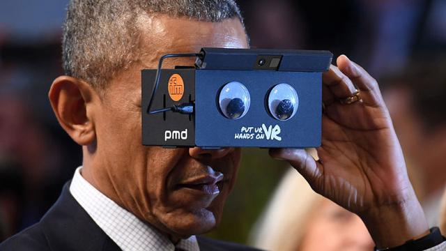
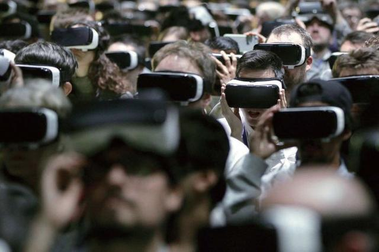
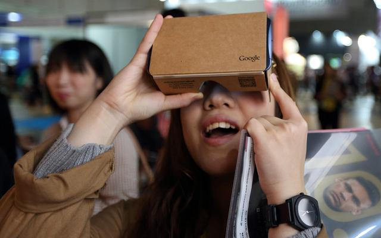
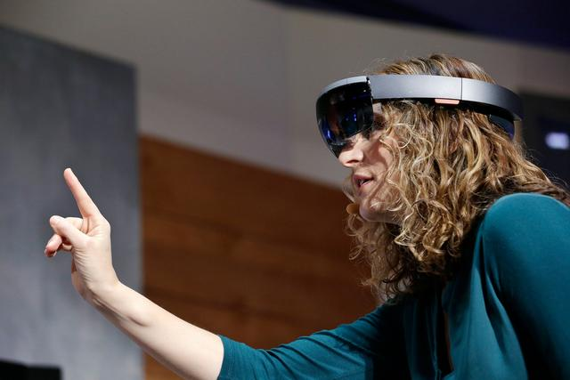
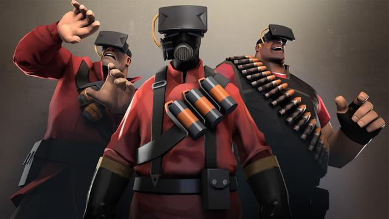
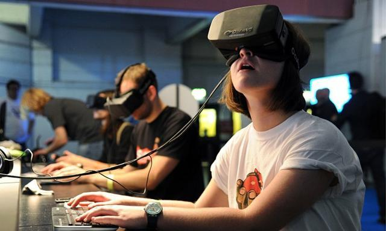
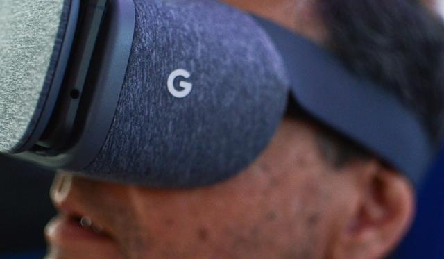
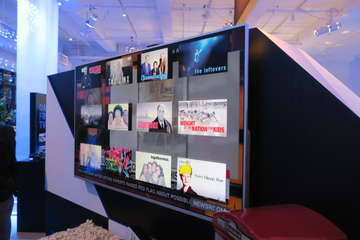
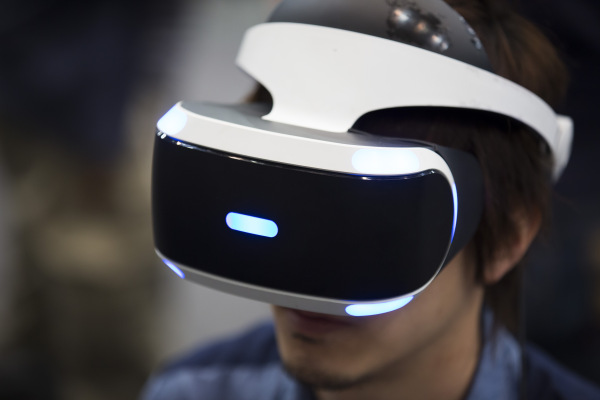

头条
VR这一年：游戏成为虚拟现实的代名词

2016年虚拟现实产业爆发，因此也被称为虚拟现实元年。

今年2月份的开篇报告中，高盛将VR和AR概括为下一个通用计算平台，文章写到，“VR/AR创造了新的、甚至是更直观的方式与计算机互动，操作方式变成了我们非常熟悉的手势和画面”，而前几个平台对应的则分别是智能手机、平板电脑和PC。

基于定位的差异，虚拟现实硬件被分成了PC VR和移动VR两种形态，从后来的市场份额数据来看，移动VR设备的占比已将PC VR远远甩在身后。
1新行业的开疆拓土从来不乏互联网和科技巨头们的身影，除了HTC、索尼以及Oculus的母公司Facebook之外，包括高通、英特尔、微软、AMD、GoPro、英伟达、三星等在内的厂商，都先后各自领域进行了布局。

对应的，包括索尼、Oculus、HTC等大厂商在新品上市初期，都大量的借助游戏内容提升产品的吸引力，尤其是索尼PS VR，本身的定位就是一台PS4主机的周边产品，核心内容就是游戏，Oculus Rift的属性也比较雷同，以至于外界在一定程度上，将游戏和虚拟现实画上了等号。

巨头们的跑马圈地往往被归纳为摧毁一个行业生命力的导火索，但这一套理论在虚拟现实行业中并不适用，从一开始，虚拟现实行业就进入了惨烈的竞争当中。

移动VR大面积覆盖的核心因素就是价格低，这一点正好和PC级VR设备形成了鲜明的对比，动辄万元的价格让更多的消费者只能退而求其次选择移动VR眼镜，从长远的角度来看，非常不利于虚拟现实的发展。

随着AT＆T的DirecTV Now这类野心勃勃的新闯入者加入战局，像Hulu这样的主流视频平台、以及Sling TV和索尼PlayStation Vue都会开始直播业务，再加上原先的有线电视和卫星电视传统大户，2107年的数字媒体主要战场由高端视频媒体领衔担纲。

AR和VR技术在2017年，会以一个较为含蓄低调的姿态显著发展。虚拟直播内容将以诱人的新方式展现。媒体公司，品牌和风投会将资金越来越多地集中到VR＆AR内容的创作上。
